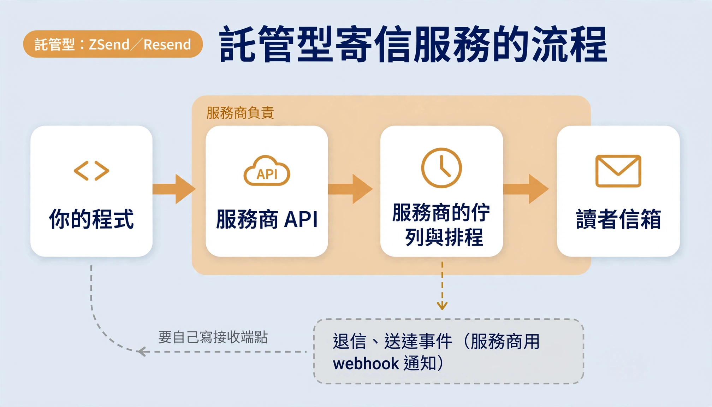
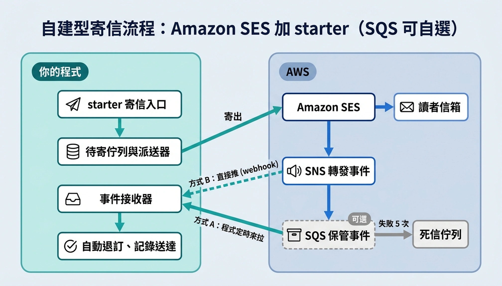

自建大量寄信伺服器
電子報、廣告信都能寄。群發整批寫入佇列，派送器依速率送出，可以排程、可以取消；重試和額度計算都在自己的程式裡，可測、可查、可換服務商。
廣告信要收件人事先同意、每封附退訂連結；SES 審核生產存取權時也會看這兩點。
ses-mail-spring-boot-starter · 開源 · MIT
一個 Spring Boot starter：把佇列、排程、重試和退信事件放進你自己的程式，SES 只負責把信送出去。電子報、廣告信都能寄。
為什麼自建
電子報、廣告信都能寄。群發整批寫入佇列，派送器依速率送出，可以排程、可以取消；重試和額度計算都在自己的程式裡，可測、可查、可換服務商。
廣告信要收件人事先同意、每封附退訂連結；SES 審核生產存取權時也會看這兩點。
退信、檢舉、送達事件可以用 SQS 拉取：停機、重新部署都不漏，處理失敗會重試，最後進死信佇列。也可以用 webhook 讓 SNS 直接推，少建一個佇列。換方式只改設定，事件處理程式不用動。
SES 每千封 $0.10，每月寄 5 萬封約 $5。託管型服務的 Pro 方案是 $19～20／月，入門方案每天只能寄 100 封，連一期 310 人的電子報都寄不完。
代價
派送器跑在你的 Spring Boot 程式裡，程式要一直在線，停機期間排程信不會寄出。待寄佇列存在你的 PostgreSQL，AWS 的網域驗證、IAM、SNS、SQS 也要自己顧。
SES 新帳號在沙箱裡：每天最多 200 封、每秒 1 封，而且只能寄給驗證過的信箱。要正式寄送得申請生產存取權，AWS 會審核用途，通過後通常是每天 5 萬封。
AI agent 技能
ses-mail-setup 把導入步驟寫成 AI agent 照著做的流程，採用開放的 Agent Skills 格式，Claude Code、Codex、Cursor、Gemini CLI、GitHub Copilot 等工具都能用。開工前會先問你：事件要用 SQS 拉取、webhook，還是不接收。接著依序帶你完成：
-DryRun 預覽。網域驗證、configuration set、SNS、SQS、IAM、信譽警報一次建好，可以重複執行。npx skills add kevintsai1202/ses-mail-spring-boot-starter --skill ses-mail-setup-a codex、-a cursor、-a claude-code，需要 Node.js 22.20 以上。skills/ses-mail-setup 資料夾複製到工具的技能目錄，多數工具是 .agents/skills/，Claude Code 是 .claude/skills/。npx skills use kevintsai1202/ses-mail-spring-boot-starter@ses-mail-setup 印出提示詞，貼給它照做。架構對照
託管型寄信服務（ZSend、Resend）把佇列、排程、重試和事件都放在服務商那端；自建型把這些搬進 starter，SES 只負責投遞。


逐項對照
| 功能 | 託管型：ZSend／Resend | 自建型：Amazon SES＋starter |
|---|---|---|
| 接收寄信 | 服務商 API | starter 寄信入口（SesMailClient） |
| 排程與重試 | 服務商的排程器：帶上寄送時間，時間到由它寄 | 自己跑排程：待寄佇列（scheduled_mail）＋派送器每 10 秒掃一次；程式要在線 |
| 投遞 | 服務商投遞 | Amazon SES |
| 退信、送達通知 | 兩家都用 webhook：服務商把事件 POST 到你寫的接收端點 | SNS：SES 把事件交給 SNS，由 SNS 轉發出去 |
| 事件暫存（自建可選） | 沒有佇列，只靠服務商重送。ZSend 在 1、2、4 秒後重試 3 次就丟棄，程式重新部署的空檔就會漏；Resend 約 1 天內重試 7 次，還能手動重播 | SQS（可選）：事件先存在佇列，程式來拉；處理失敗會重試，5 次仍失敗進死信佇列。不用 SQS 時，SNS 直接推給 starter 的接收器 |
| 處理事件 | 自己寫 | 自動退訂（永久退信、檢舉）、記錄送達時間 |
SES 只會把事件丟到 SNS topic。SNS 負責轉發：可以直接 POST 到你的服務（webhook），也可以送進 SQS 佇列，日後還能再加 email 通知。它不負責保存，推給你的服務失敗時只重試約 1 分鐘，之後就沒了。
SQS 負責保管：事件放進佇列後，由我們的程式定時來拉。部署、重啟或資料庫出錯時事件留在佇列裡，程式恢復後再處理；一直處理不了的會移到死信佇列，方便事後查。
事件接收
兩種方式共用 starter 同一套驗簽、topic 白名單與事件處理，你只寫一次 SesEventListener。差別只在事件怎麼進到程式，用設定開關切換，只開一個。
sesmail.sqs.enabled=true。SNS → SQS 佇列 → starter 每次長輪詢 20 秒，有事件就立刻回來處理。停機、重新部署、資料庫出錯都不漏，處理失敗會重送，5 次仍失敗進死信佇列。不用對外開端點。
sesmail.sns.enabled=true。SNS 直接 POST 到 starter 內建的接收器 /sesmail/sns，訂閱確認、驗簽都自動處理。少建一個佇列，但服務停機時 SNS 只重試約 1 分鐘，處理失敗也不會重送。
| 方式 A：SQS 拉取 | 方式 B：webhook | |
|---|---|---|
| 要建的 AWS 資源 | SNS topic、SQS 佇列、死信佇列、IAM 讀佇列權限 | SNS topic、HTTPS 訂閱 |
| 對外端點 | 不用 | 要，公開 HTTPS 網址 |
| 服務停機時 | 事件留在佇列，預設保存 4 天 | SNS 重試約 1 分鐘後丟棄 |
| 處理失敗時 | SQS 重送，5 次後進死信佇列 | 只記 log |
| 適合 | 正式電子報，退訂不能漏 | 寄量小、先求簡單，之後再加 SQS |
排程
兩種做法差最多的就是這裡。託管服務自己有排程器；SES 只會「現在寄」，排程得由我們的程式自己跑。
呼叫排程 API 時帶上寄送時間（ZSend 的 /emails/schedule、Resend 的 scheduled_at），服務商存起來，時間到由它寄出；取消也是呼叫 API。寄送當下我們的程式停機也沒關係。
排程信先寫進 scheduled_mail，附上寄送時間。程式裡的派送器每 10 秒掃一次，撈出到期的信（一輪最多 200 封），逐封認領後依速率交給 SES。程式沒在跑，信就不會寄出。
sesmail.dispatch-interval 調整），再加上限速排隊。每秒 5 封時，310 封約 1 分鐘寄完。責任與費用
| 工作 | ZSend | Resend | SES ＋ starter |
|---|---|---|---|
| 批次群發 | 服務商 | 服務商 | 自建佇列 單一 INSERT，全有或全無 |
| 排程、取消 | 服務商 | 服務商 | 自建派送器 每 10 秒掃一次，程式停機就不寄；派送與取消不會互相蓋掉 |
| 速率控制、重試 | 服務商 | 服務商 | 自建派送器 30 秒起倍增退避，最多 5 次 |
| 額度查詢 | Zeabur GraphQL | 無專用 API | SES GetAccount 再扣佇列待寄 |
| 退信、檢舉 | webhook 重試 3 次（約 7 秒內） | webhook 重試 7 次（約 1 天內） | SNS → SQS 或 webhook 自選；自動退訂，SQS 模式失敗會重試 |
| 送達狀態 | webhook | webhook | delivered_at 後台顯示「已送達」 |
| 停寄名單 | 不明 | 服務商 | SES 帳號層級 |
| 信譽監控 | 不明 | 儀表板 | CloudWatch 警報 退信率 > 2%、檢舉率 > 0.05% |
| 入門方案 | Zeabur Free 方案不能用；Dev 方案 $5／月，每天 100 封、每月 3,000 封 | 免費，每天 100 封、每月 3,000 封 | 沙箱：每天 200 封、每秒 1 封，只能寄給已驗證信箱。申請生產存取權通過後，通常提高到每天 5 萬封（依用途審核而定）；寄送紀錄良好時可再申請調高，或由 AWS 自動調高 |
| 升級方案 | Pro 方案 $19／月，每月 5 萬封、不限每日；超額每千封 $0.90 | Pro $20／月，每月 5 萬封 | 每千封 $0.10，我們的用量約 $0.3／月 |
MailSender寄信介面，切換 SES／ZSendSesMailSender轉接到 starterSesMailClient寄信入口scheduled_mail待寄佇列（資料庫）EmailLogDeliveryListener記錄寄送失敗newsletterses-events轉發ses-events保管SqsEventPoller拉取事件SesSuppressionListener自動退訂SesDeliveryListener寫入 delivered_atses-events/sesmail/snsSnsWebhookController同一套驗簽與處理ses-events-dlq死信佇列，保留 14 天MailQuotaService後台額度，再扣掉佇列待寄SesQuotaService自己管理
自建型適合有能力自己架設、維運伺服器的團隊：程式要一直在線，資料庫自己顧，AWS 主控台也要有人會操作。寄信本身很便宜，代價是下面這些事都由你負責；導入技能會一步步帶你做完。
scheduled_mail 存在你的資料庫。建表、備份、升級 starter 時補上新的 migration，都要自己做。SENDING。starter 不會自動重寄，要人工確認讀者沒收到，再改回待寄。ses:SendEmail、ses:GetAccount，方式 A 再加讀佇列的三項權限。存取金鑰的保管與更換也要自己來。沒有人手顧主機和 AWS，或寄量在每天 100 封以內，選託管型服務比較省事。